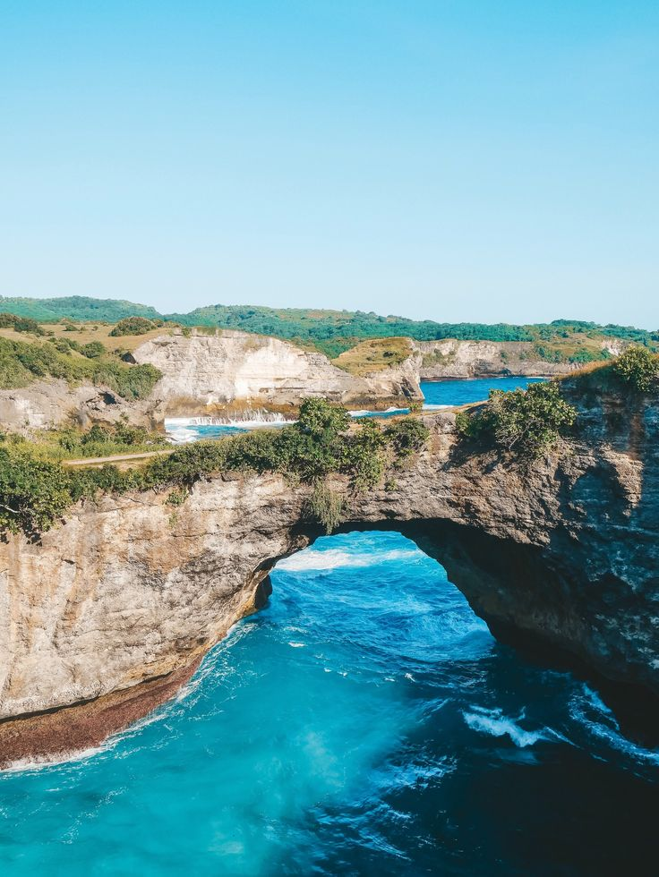

Selamat Datang di Nusa Penida
Keindahan alam yang memukau
Eksplorasi Keindahan Nusa Penida
Nusa Penida adalah sebuah pulau yang terletak di sebelah tenggara Pulau Bali, Indonesia. Pulau ini merupakan bagian dari Kabupaten Klungkung dan terkenal dengan keindahan alamnya yang luar biasa. Nusa Penida menawarkan pantai-pantai yang indah, tebing-tebing curam, air laut yang jernih, dan pemandangan alam yang menakjubkan, menjadikannya salah satu destinasi wisata populer di Bali.
Destinasi Terpopuler di Nusa Penida

Kelingking Beach
Salah satu tempat yang paling terkenal di Nusa Penida, dikenal karena tebingnya yang berbentuk seperti kepala dinosaurus (T-Rex). Di sini, pengunjung bisa menikmati pemandangan yang spektakuler dan juga pantai yang indah di bawah tebing, meskipun akses menuju pantai memerlukan sedikit usaha ekstra dengan mendaki turunan yang curam..

Diamond Beach
Pantai Diamond di Nusa Penida adalah salah satu pantai paling ikonik dan menakjubkan di pulau ini, terkenal karena pemandangan alamnya yang dramatis dan keindahan yang menakjubkan. Terletak di bagian timur pulau, pantai ini memiliki ciri khas tebing-tebing tinggi yang mengelilinginya dan air laut yang sangat jernih dengan gradasi warna biru kehijauan yang memikat..

Crystal Bay
Crystal Bay di Nusa Penida adalah salah satu pantai paling terkenal dan indah di pulau ini, yang dikenal karena air lautnya yang sangat jernih dan pemandangan alam yang memukau. Pantai ini menjadi tujuan favorit bagi wisatawan yang ingin menikmati suasana santai, berenang, atau menyelam di perairan yang bersih dan kaya dengan kehidupan laut..
Galeri Keindahan Alam Nusa Penida

Broken Beach

Angel Billabong